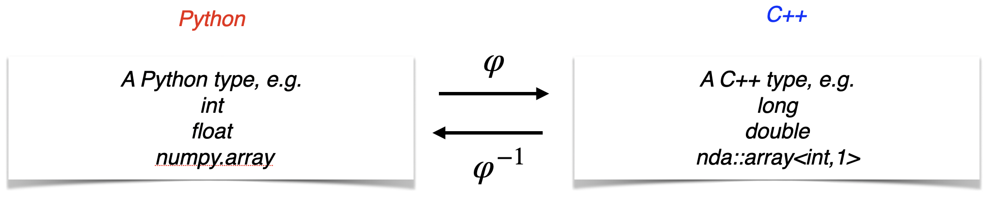

Basic notions
See also
For an overview of the workflow and Clang tool concept, see Getting Started.
Type conversion
Principle
Python and C++ types are different.
For example, a long in C++ is converted from/to a Python integer.
In order to call a C++ function from Python, it is necessary to:
convert its arguments to C++,
call it and
convert its return value to Python.
This process is called wrapping the function to Python. Only functions whose arguments and return value are of convertible types can be wrapped and therefore called across languages.
{kind=link}

So calling a C++ function from Python involves converting types back and forth between Python and C++,
Note
clair issues a compilation error for any attempt to wrap a function with an inconvertible type.
Convertible types
Convertible types include:
Built-in types:
int,long,float,double,bool, etc.Standard library types:
std::string,std::vector<T>,std::tuple<Ts...>,std::optional<T>,std::map<K,V>, etc. For a complete list, see Converters.Wrapped types
Third party library types, if the library provides converters, e.g. the nda library. To configure a third party library to automatically work with clair, see here.
Dynamical dispatch
In C++, objects are statically typed (one variable has one type fixed at compilation), and functions can be overloaded.
In Python, objects are dynamically typed, and there is no overload.
The number and types of its arguments are analyzed (at runtime),
The first C++ function for which the Python arguments can be converted to the C++ arguments is called.
If none applies, a Python exception is raised.
This process is called dynamical dispatch. Let us illustrate it with a simple example.
#include <c2py/c2py.hpp>
int f(int x) { return -x; }
int f(int x, int y) { return x + y; }
std::string f(std::string const &s) { return s + s; }
clair-c2py reports:
-- Function: f
-- . f(int x)
-- . f(int x, int y)
-- . f(const std::string& s)
meaning that the 3 C++ overloads of f are “gathered” in one Python function f.
>>> import fun1 as M
>>> M.f(1)
-1
>>> M.f(1,2)
3
>>> M.f("abc")
'abcabc'
If no dispatch is possible for the arguments given, c2py reports a TypeError, e.g.
>>> M.f(1,2,3)
Traceback (most recent call last):
...
TypeError: [c2py] Can not call the function with the arguments
(1, 2, 3)
The dispatch to C++ failed with the following error(s):
[1] (x: int)
-> int
-- Too many arguments. Expected at most 1 and got 3
[2] (x: int, y: int)
-> int
-- Too many arguments. Expected at most 2 and got 3
[3] (s: str)
-> str
-- Too many arguments. Expected at most 1 and got 3
or
>>> M.f([1,2,3])
Traceback (most recent call last):
...
TypeError: [c2py] Can not call the function with the arguments
([1, 2, 3],)
The dispatch to C++ failed with the following error(s):
[1] (x: int)
-> int
-- x: Cannot convert [1, 2, 3] to integer type
[2] (x: int, y: int)
-> int
-- Too few arguments. Expected at least 2 and got 1
[3] (s: str)
-> str
-- s: Cannot convert [1, 2, 3] to string